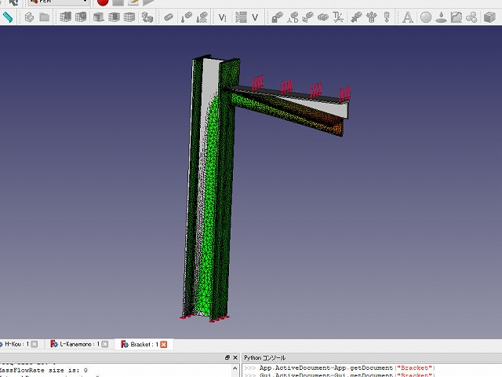
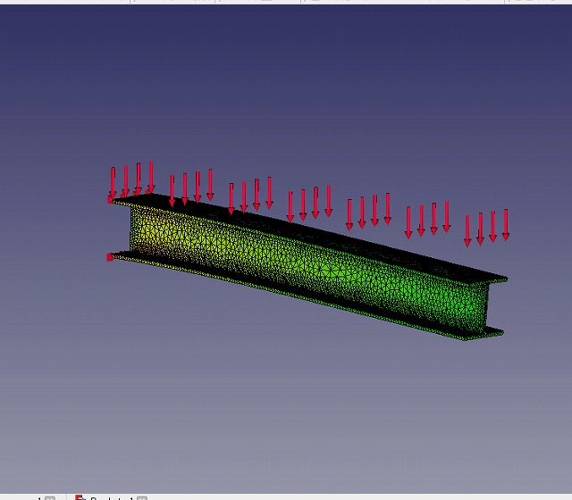
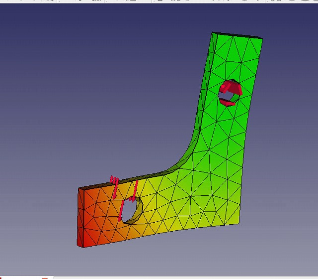

解析結果
3D-FEM 構造解析
３Ｄ－ＦＥＭ アングルのブラケット ： 等分布荷重ですが、アングルの捻じれが見られます。
3D-FEM 構造解析 片持ち梁
３Ｄ－ＦＥＭ ： 定番のＨ鋼の片持ち梁です。
3D-FEM 構造解析 Ｌ型金物
３Ｄ－ＦＥＭ ： 小物ですが、かえって解析が難しいものですね。
Ｆｒｅｅ でここまでできる！
３Ｄ－ＦＥＭ アングルのブラケット ： 等分布荷重ですが、アングルの捻じれが見られます。
３Ｄ－ＦＥＭ ： 定番のＨ鋼の片持ち梁です。
３Ｄ－ＦＥＭ ： 小物ですが、かえって解析が難しいものですね。